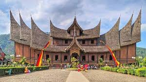

Sumbarpedia: Menyelami Budaya dan Tradisi Sumatera Barat

Sumatera Barat, atau sering disebut Sumbar, adalah provinsi yang kaya akan budaya dan tradisi. Masyarakat Minangkabau, yang merupakan penduduk asli daerah ini, memiliki adat istiadat yang unik dan menarik.
Budaya Minangkabau
Budaya Minangkabau terkenal dengan sistem matrilineal, di mana garis keturunan diturunkan melalui pihak ibu. Ini tercermin dalam berbagai aspek kehidupan, termasuk dalam warisan, harta, dan pernikahan.
Masakan Khas
Masakan Sumatera Barat sangat terkenal, terutama Nasi Padang yang disajikan dengan berbagai lauk pauk. Rendang, yang terbuat dari daging sapi yang dimasak dengan rempah-rempah, adalah salah satu hidangan yang paling terkenal.
Tempat Wisata
Beberapa tempat wisata yang wajib dikunjungi di Sumatera Barat antara lain:
- Danau Singkarak
- Jam Gadang di Bukittinggi
- Istana Pagaruyung 
- Air Terjun Lembah Anai